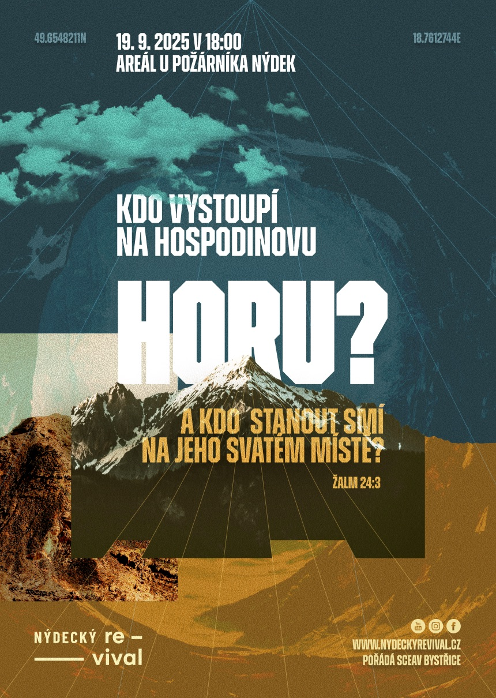

Nýdecký Revival je pravidelný worshipový podvečer pod záštitou SCEAV Bystřice. Setkáváme se k chválám, modlitbám a povzbuzení z Božího slova. Toužíme po živém vztahu s Ježíšem Kristem a chceme mít svá srdce připravená na každý Jeho dotek – i na Jeho slavný návrat.
Stejně jako moudré panny chceme mít své lampy plné oleje. V modlitbách voláme: „Přijď, Pane Ježíši!“ – protože Duch i naše srdce říkají: „Přijď!“